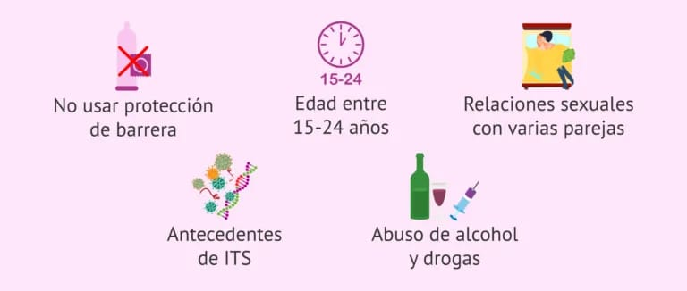

¿Qué aumenta el riesgo de contraer una ETS?
Algunos comportamientos y situaciones pueden elevar notablemente la posibilidad
de adquirir una Enfermedad de Transmisión Sexual. Conocer estos factores permite
tomar decisiones más seguras y responsables.
Principales Factores de Riesgo
- No usar protección: tener relaciones sexuales sin condón es el mayor riesgo.
- Múltiples parejas sexuales: aumenta la exposición a personas infectadas.
- Falta de información: desconocer síntomas, prevención y cuidados.
- Iniciar vida sexual temprana: mayor vulnerabilidad y menor conocimiento.
- Uso de drogas o alcohol: disminuye la capacidad de tomar decisiones seguras.
- Antecedentes de ETS: una infección previa aumenta la probabilidad de otra.
- Compartir agujas o jeringas: riesgo directo de infecciones como VIH o Hepatitis.
¿Por qué es importante identificarlos?
Reconocer los factores de riesgo ayuda a tomar medidas preventivas, proteger la salud
y evitar contagios futuros tanto en uno mismo como en las parejas sexuales.